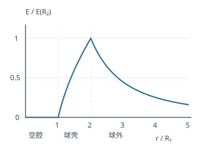

大学物理教材习题 10：真空中的静电场
按题号查看目录 （点击展开）
- 10-1 四个点电荷的合力
- 10-2 两个带电小球
- 10-3 直角三角形中的场强
- 10-4 电四极子远场
- 10-5 均匀细线延长线上的电场
- 10-6 线密度不均匀的细棒
- 10-7 半圆两半带异号电荷
- 10-8 两根无限长异号带电直线
- 10-9 两无限大带电平面
- 10-10 带圆孔的无限大平面
- 10-11 带窄缺口的圆弧
- 10-12 立方体电通量
- 10-13 均匀场穿过半球面
- 10-14 氢原子的球对称电荷云
- 10-15 大气平均电荷密度
- 10-16 均匀带电厚球壳
- 10-17 两同轴无限圆柱面
- 10-18 挖空带电球
- 10-19 改变电势零点
- 10-20 球面和细线的相互作用能
- 10-21 电四极子远处的电势
- 10-22 均匀圆环中心电势
- 10-23 均匀细杆延长线上的电势
- 10-24 直线与半圆组合
- 10-25 两同心带电球面电势
- 10-26 球对称非均匀体电荷
- 10-27 两球面等面电荷密度
- 10-28 同心球面间的动能
- 10-29 沿半圆移动的电场力做功
- 10-30 两质子的经典接近估计
- 10-31 带电细棒的电势与场强分量
对应教材下册第 36—39 页。先独立画图、写明正方向，再对照解法。记 k=1/(4πε₀)≈8.99×10⁹ N·m²/C²；除特别说明，电势零点取无穷远。答案根据扫描教材独立推导，非教材官方答案。
10-1 四个点电荷的合力
位置 2、4 相对位置 3 对称，电荷相同，作用在 3 上的力大小相等、方向相反，互相抵消。只剩原点位置 1 的力。距离 r=√[(0.5 m)²+(0.5 m)²]=1/√2 m，故 F=kq²/r²≈1.80×10⁻² N，方向从原点指向 3，与 x、y 正方向各成 45°；两个分量约均为 1.27×10⁻² N。
10-2 两个带电小球
左右对称时两球距离 d=2l sinθ。对任一球，竖直方向 T cosθ=mg，水平方向 T sinθ=kq²/d²。两式相除得 mg tanθ=kq²/(4l²sin²θ)，所以 q=2l sinθ√(mg tanθ/k)。这是把小球近似为点电荷、细线质量可忽略的模型。
10-3 直角三角形中的场强
C 点距 A 为 0.03 m、距 B 为 0.04 m，两电场互相垂直。正电荷 A 的场沿 A→C，大小 E₁=k(1.8×10⁻⁹)/0.03²≈1.80×10⁴ N/C；负电荷 B 的场由 C 指向 B，大小 E₂≈2.70×10⁴ N/C。合场大小 √(E₁²+E₂²)≈3.24×10⁴ N/C，方向由上述两个分量共同确定，与 A→C 的夹角约 56.3°，朝 C→B 一侧。
10-4 电四极子远场
把中央 −2q 置于原点，两端 +q 在 x=±l，P 在 x=r>l。精确轴向场为 E=kq[(r−l)⁻²+(r+l)⁻²−2r⁻²]。当 r≫l，二项式展开 (1±l/r)⁻²≈1∓2l/r+3l²/r²，常数项与一次项抵消，得到 E≈6kql²/r⁴。按 Q=2ql² 定义四极矩，E≈3kQ/r⁴，方向沿轴向远离中心（q>0）。这是远场近似，不是任意 r 的精确值。
记号说明：扫描教材在四极矩定义处印有 Q＝2qrₑ²，但题干所定义的间距记号是 l，未解释 rₑ。这里按图中每个正电荷距中心为 l，推导得到 Q＝2ql²；不能确定原书该处的记号是否为排印错误。
10-5 均匀细线延长线上的电场
取细线从 −l 至 l，P 在 x=a>l，λ=q/(2l)。各元场方向相同：E=kλ∫₋ₗˡ dx/(a−x)²=kq/(a²−l²)。q>0 时指向 +x；q<0 时反向。a≫l 时趋于点电荷场 kq/a²。
分步推导：令电荷元位于 x，长度为 dx，dq＝[q/(2l)]dx；观察点与电荷元相距 a−x，且 a>l。由于所有电荷元在 P 点产生的场沿同一直线，可先计算有符号分量：Eₓ＝k[q/(2l)]∫₋ₗˡ dx/(a−x)²。原函数为 1/(a−x)，代入上下限得到 [1/(a−l)−1/(a+l)]＝2l/(a²−l²)，最后约去 2l。
10-6 线密度不均匀的细棒
棒上坐标 x 从 0 到 2l，观察点位置 L=b+2l，取 b>0。电荷元 dq=Ax dx，故 Eₓ=kA∫₀²ˡ x dx/(L−x)²=kA[L/b−1−ln(L/b)]。正电荷产生的场沿 +x。用积分时 x 是电荷元位置，L 是观察点位置，不能混用。
分步推导：观察点坐标记为 L＝b＋2l，取棒上位置 x 的电荷元 dq＝Ax dx，P 到它的距离是 L−x。令 u＝L−x，将积分换成 ∫ᵦᴸ(L/u²−1/u)du；积分后为 L/b−1−ln(L/b)。若 x 和 L 都以米计，L/b 为无量纲数，对数才有意义。
10-7 半圆两半带异号电荷
右半四分之一圆弧总电荷 +q，左半为 −q，线密度绝对值 2q/(πR)。关于竖直轴配对后竖直分量抵消，水平分量都指向左边。沿角度积分得 E=4kq/(πR²)，方向由右侧正电荷指向左侧负电荷。
积分细节：取通常向右的水平轴，右半圆弧上从水平轴起的角度 θ 为 0 到 π/2。电荷元 dq＝λR dθ，在圆心的水平分量为 −kλ cosθ dθ/R。右半积分得 −kλ/R；左半负电荷的水平分量同样向左，大小也为 kλ/R。竖直分量互相抵消，合场大小为 2kλ/R＝4kq/(πR²)。教材图中的 x 正向朝左，故按教材坐标合场的 x 分量为正。
10-8 两根无限长异号带电直线
设两线分别在 x=−d/2 和 x=d/2，中垂面上一点与中点的垂直距离为 y。各线场强大小 λ/(2πε₀√(y²+d²/4))；与中垂面平行的分量抵消，垂直分量相加：E=λd/[2πε₀(y²+d²/4)]，方向由正线指向负线。每单位长度相互作用力大小 f=λ²/(2πε₀d)，为吸引力；不应把一根线自己的场计入受力。
方向与计算：令两带电线距中垂面各为 d/2，P 到每条线的距离 s＝√(y²+d²/4)。每条线产生场强大小 E₀＝λ/(2πε₀s)。正、负电荷线在垂直于中垂面的分量同向，各为 E₀(d/2)/s；另一个分量等大反向抵消。因此合场 E＝2E₀(d/2)/s＝λd/(2πε₀s²)。求两线间单位长度的力时，只用另一条线在本线处产生的场：f＝λ·[λ/(2πε₀d)]。
10-9 两无限大带电平面
取由左向右为正。单个无限大带电平面两侧的场强大小 |σ|/(2ε₀)，正面电荷向外、负面电荷向内。两平面叠加后：区域 I：Eₓ=σ/(2ε₀)；区域 II：Eₓ=3σ/(2ε₀)；区域 III：Eₓ=−σ/(2ε₀)。符号说明方向，结果不适用于有限平面边缘附近。
逐区叠加：以 σ/(2ε₀) 为单位，左侧正平面在 I、II、III 区的分量依次为 −1、+1、+1；右侧负平面的分量依次为 +2、+2、−2。逐项相加得到 +1、+3、−1。这里 σ 表示题中正数，负号已包含在第二个平面的面电荷密度中。
10-10 带圆孔的无限大平面
把有孔平面看成完整平面加上一块面密度 −σ 的圆盘。P 在平面一侧、距圆心 r>0，完整平面的场为 σ/(2ε₀)，圆盘轴线上的场为 (σ/(2ε₀))×(1−r/√(r²+R²))。相减得 E=σr/[2ε₀√(r²+R²)]，正 σ 时方向由平面向 P。r→0 时为零，r≫R 时趋于无限平面场。
叠加思路：先想象整个平面均匀带正电，再在圆孔的位置叠加一个同样大小、带负电的圆盘，这样圆孔内电荷恰好抵消。轴线上完整平面场与正圆盘场同向，所以有孔平面的场等于二者之差。靠近孔心时，剩余场趋近零；距离很远时，有限大小的孔影响变小，结果趋近完整无限平面的场。
10-11 带窄缺口的圆弧
R=0.50 m，缺口两端弦长 0.02 m，缺口半圆心角 α=arcsin(0.02/(2R))=arcsin(0.02)。完整圆环在圆心的场为零，因此现有圆弧的场等于缺失小圆弧所产生的场的反向。λ=q/[R(2π−2α)]，故 E=2kλsinα/R≈0.719 N/C，方向从圆心指向缺口。若把“空隙 2 cm”理解为弧长，数值几乎一致，但这里按两端直线距离计算。
代数与数值：取题给 q＝3.12×10⁻⁹ C，R＝0.50 m，α＝arcsin(0.02)≈0.0200013 rad，λ≈9.995×10⁻¹⁰ C/m。代入 E＝2kλsinα/R 得约 0.719 N/C。完整圆环的线密度必须与剩余圆弧相同；题给电荷 q 属于剩余的棒，不能直接除以完整圆周长。
10-12 立方体电通量
- 电荷在中心，六个面完全等价，总通量 q/ε₀，所以每面 q/(6ε₀)。
- 电荷在顶点，将 8 个相同小立方体拼成大立方体，使电荷位于大立方体中心。大立方体每个大面的通量 q/(6ε₀)，每个大面分成 4 个等价小面，故三个不含该顶点的面各为 q/(24ε₀)。三个包含电荷顶点的面上，除顶点奇点外电场沿面，通常按去掉奇点的曲面积分各为 0。电荷恰在边界时不能直接把它当成严格处在封闭面内部。
10-13 均匀场穿过半球面
给半球曲面补上底圆构成闭合面，内部无电荷，故曲面通量等于底圆通量的相反数。大小 |Φ|=EπR²。若场沿半球轴向从底面指向球顶，取曲面外法线则 Φ=+EπR²；反向时为负。
10-14 氢原子的球对称电荷云
总电子电荷为 −e 给出 C=e/(πa₀³)。半径 r 内电子电荷为 −e[1−e⁻²ʳ/ᵃ⁰(1+2r/a₀+2r²/a₀²)]，加上核电荷 +e，包围净电荷为 e·e⁻²ʳ/ᵃ⁰(1+2r/a₀+2r²/a₀²)。令 r=a₀ 得 q内=5e·e⁻²≈0.6767e。由高斯定理 E=k(5e·e⁻²)/a₀²≈3.47×10¹¹ N/C，径向向外。
积分步骤：把电子云分成半径为 s、厚度为 ds 的薄球层，其体积为 4πs²ds、电荷为 −4πCs²e^(−2s/a₀)ds。令所有球层的电荷和为 −e，就可确定 C＝e/(πa₀³)。求半径 a₀ 内净电荷时，只积分到 a₀，再加中心核电荷 +e；得到 q内＝5e·e⁻²。选半径 a₀ 的同心高斯球，由球对称得到 E·4πa₀²＝q内/ε₀。
10-15 大气平均电荷密度
取竖直向上为正，200 m 处 E_z=−100 N/C，300 m 处 E_z=−50 N/C。水平变化忽略时，∇·E≈ΔE_z/Δz=(−50+100)/100=0.5 N/(C·m)。因此 ρ平均≈ε₀×0.5≈4.43×10⁻¹² C/m³。正负号来自矢量方向，不是把两个场强大小直接相减。
用薄柱检查符号：设水平截面积为 S，柱底在 200 m、顶在 300 m，侧面的通量在场近似竖直时为零。顶面外法线向上、底面外法线向下，总通量为 (−50)S−(−100)S＝50S。由高斯定理，柱内平均电荷密度为 ε₀·50S/(100S)，与上式一致。此结果依赖所选区域内电场近似竖直且可用给定高度的场代表柱面，不能仅凭两点大小判断任意三维电场的局部密度。
10-16 均匀带电厚球壳
体密度 ρ=3Q/[4π(R₂³−R₁³)]。由球对称和高斯定理，径向场分三段：
- r<R₁：E=0。
- R₁<r<R₂：E=kQ(r³−R₁³)/[(R₂³−R₁³)r²]。
- r>R₂：E=kQ/r²。
Q>0 时向外。也可把厚球壳分成许多薄球面：观察点内的球面等效于中心点电荷，外面的球面内部场为零，积分得到同一结果。E-r 图从空腔中的零开始，在壳内上升，到 R₂ 后按 1/r² 下降，两处边界连续。
两种方法为什么一致：高斯面半径在 R₁ 和 R₂ 之间时，包围的电荷是 ρ·4π(r³−R₁³)/3，由 E·4πr²＝q内/ε₀ 得到壳内公式。用球面叠加时，把厚壳拆成许多同心薄球面：半径小于 r 的薄球面对外表现为中心点电荷，半径大于 r 的薄球面在观察点处的场为零，因此只需积分 R₁ 到 r 的电荷，得到相同结果。下图取 R₂＝2R₁ 作示意；曲线的具体形状随两半径之比改变。

10-17 两同轴无限圆柱面
取同轴高斯圆柱，侧面积 2πrL。依次包围电荷 0、λ₁L、(λ₁+λ₂)L，故三个区域的径向分量分别为 0、λ₁/(2πε₀r)、(λ₁+λ₂)/(2πε₀r)。正号向外，负号向内；圆柱面本身两侧极限可不同。
10-18 挖空带电球
用“完整密度 ρ 的大球 + 密度 −ρ 的小球”叠加。设从大球心 O 指向小球心 O′ 的位移矢量为 d，空腔整个包含在大球内。
空腔内任一点相对于 O 的位置为 r，两个球内部场相加：E=ρr/(3ε₀)−ρ(r−d)/(3ε₀)=ρd/(3ε₀)，所以图中 O、O′ 均为这个相同矢量，只要它们确实在空腔内。
对其他点使用通式：完整大球场减去小球场；均匀球半径为 a、中心位矢为 c 时，场为 ρ(r−c)/(3ε₀)（球内），或 ρa³(r−c)/[3ε₀|r−c|³]（球外）。P 在大球内、小球外，P′ 在两球外，分别代入即可。图未标出这些点到球心的距离，不能给出唯一数值。
按教材图示写出 P 和 P′：沿 O→O′ 取 x 正方向，令 OO′＝d、OP＝s、OP′＝t，空腔半径为 r。图中 P 在大球内、空腔外且在 O 左侧，P′ 在大球外；因此 s<R、s＋d>r、t>R。两球叠加后，P 点有 Eₓ(P)＝[ρ/(3ε₀)]·[−s＋r³/(s＋d)²]；P′ 点有 Eₓ(P′)＝[ρ/(3ε₀)]·[−R³/t²＋r³/(t＋d)²]。表达式的正负决定相对所选正方向的实际方向；题图没有给出 s、t、d 的数值，故保留符号。
10-19 改变电势零点
原先以无穷远为零时 V=kq/r。改以 B 为零，就是所有电势减去 kq/0.20。于是 VA=kq(1/0.10−1/0.20)≈44.9 V；VC=kq(1/0.30−1/0.20)≈−15.0 V。电势零点改变不影响电势差与电场。
10-20 球面和细线的相互作用能
图示细线位于球外，近端距球心 l、远端 2l，要求 l≥R。球外电势 V=kQ/r，线元 dq=λdr。相互作用能 U=∫Vdq=kQλ∫ₗ²ˡ dr/r=kQλ ln 2。这是细线在球面所产生外场中的相互作用能，不包括细线自身的电场能。
为什么电势能可以这样相加：球面外每个位置的电势都等于 kQ/r；线段上微小电荷 λdr 的相互作用能为 V·λdr。沿径向从 l 积分到 2l，得 kQλ[ln(2l)−ln l]＝kQλln2。Q 与 λ 同号时为正，异号时为负。若线段部分进入球面内部，就必须将球内常电势与球外电势分段积分，不能直接使用本式。
10-21 电四极子远处的电势
中央 −2q、两端 +q，距离中心均为 l，观察点距中心 r、与轴线夹角 θ。将三项点电荷电势在 l/r≪1 下展开，总电荷项和偶极项抵消，首个非零项为 V≈kql²(3cos²θ−1)/r³。角度取图中与四极子轴的夹角；沿轴 θ=0 时 V≈2kql²/r³，对 r 求负导数得到 10-4 的远场。
展开过程：设 c＝cosθ，两个正电荷到 P 的距离分别为 r√(1∓2lc/r＋l²/r²)。对 l/r 展开其倒数，各得 r⁻¹[1±(l/r)c＋(l/r)²(3c²−1)/2＋更高阶项]。两项相加后一次项抵消，再减去中央负电荷的 2/r，留下二次项，故 V≈kql²(3c²−1)/r³。沿垂直轴线 θ＝90° 时电势为负；当 3cos²θ−1＝0 时这一阶恰好为零，不能据此断言精确电势必为零。
10-22 均匀圆环中心电势
环半径设为 R，总电量 2πRλ，所有电荷元距中心均为 R，所以 V=k(2πRλ)/R=2πkλ=λ/(2ε₀)。这是以无穷远为电势零点时的结果；环心场强虽为零，电势通常不为零。
10-23 均匀细杆延长线上的电势
λ=q/(2l)。离 P 最近端为 a、最远端为 a+2l，积分 V=kλ∫ₐᵃ⁺²ˡ ds/s，得 V=[kq/(2l)]ln[(a+2l)/a]，其中 a>0。
10-24 直线与半圆组合
两条直线关于 y 轴对称，在 O 处电场互相抵消；半圆的水平分量抵消、竖直分量向下。故 E⃗=−(2kλ/R)ĵ。电势是标量：半圆给 kλπ，两段直线各给 kλln2，因此 V=kλ(π+2ln2)，以无穷远为零。
分段核算：半圆每个电荷元到 O 均距 R，电势贡献为 kλ·πR/R＝πkλ；每段直线距 O 从 R 到 2R，贡献 kλ∫ᴿ²ᴿ ds/s＝kλln2。电势没有方向，三部分直接相加。电场则先按方向叠加：左右直线贡献等大反向，半圆各元水平分量抵消；令 θ 从 0 到 π，竖直分量为 −(kλ/R)∫₀π sinθ dθ＝−2kλ/R。
10-25 两同心带电球面电势
设 R₁<R₂。单个均匀球面在内部电势是 kq/R，在外部是 kq/r；标量叠加：
- r<R₁：V=k(q₁/R₁+q₂/R₂)。
- R₁<r<R₂：V=k(q₁/r+q₂/R₂)。
- r>R₂：V=k(q₁+q₂)/r。
球面上电势连续，跨过带电球面时电场可以跳变。
10-26 球对称非均匀体电荷
ρ=qr/(πR⁴)，球内半径 r 包围电荷 Q(r)=∫₀ʳρ(s)4πs²ds=qr⁴/R⁴，因此总电量 q。
由高斯定理：r≤R 时 E=kqr²/R⁴；r≥R 时 E=kq/r²，均径向向外。以无穷远为零，从表面向内积分电场：球外 V=kq/r，球内 V=kq[4/(3R)−r³/(3R⁴)]。在 r=R 两段电势和场强一致。
球内电势的积分步骤：先以无穷远处为零，求得球面电势 V(R)＝kq/R。对于球内 r，V(r)−V(R)＝∫ᵣᴿE(s)ds＝(kq/R⁴)∫ᵣᴿs²ds＝kq(R³−r³)/(3R⁴)。与 V(R) 相加，便得到 kq[4/(3R)−r³/(3R⁴)]。将 r＝R 代入，两侧结果都为 kq/R，可检查连接是否连续。
10-27 两球面等面电荷密度
球心电势 V₀=σ(R₁+R₂)/ε₀，故 σ=ε₀V₀/(R₁+R₂)≈8.85×10⁻⁹ C/m²。若内球面电荷保持不变，改变外球面总电荷 ΔQ，球心电势变化为 kΔQ/R₂。要使球心电势降 300 V，需要 ΔQ=−300R₂/k≈−6.68×10⁻⁹ C，即外球面的电荷减少 6.68 nC；最终外球面带负电。仅把最初外球面上的正电荷全部移走仍不能使总电势为零。
核算第二问：初始外球面电荷 Q₂＝4πR₂²σ≈4.45 nC，而使球心电势降低 300 V 所需的外球面电荷变化为 −6.68 nC。因此最终 Q₂′≈−2.23 nC。如果“放掉”仅指移走现有的正电荷，最多只能移走 4.45 nC，无法使球心电势降到零；要达到题目的零电势，还需要进一步转移电荷，使外球面最终带负电。
10-28 同心球面间的动能
在 R<r<2R，外球面的电势为常数，对两端电势差没有贡献；内球面产生的电势差是 kq(1/R−1/(2R))。由能量守恒，正粒子从静止释放，到达外球面时 K=kqQ/(2R)。把粒子视为试探电荷、球面电荷分布固定并忽略其他作用。
检查两端电势：内球面处 V(R)＝kq/R−3kq/(2R)＝−kq/(2R)；外球面处 V(2R)＝kq/(2R)−3kq/(2R)＝−kq/R。尽管两处电势都为负，正电荷从较高电势移向较低电势，电势能减少 Q·kq/(2R)，动能增加相同数值。
10-29 沿半圆移动的电场力做功
图中 OA=OB=R，故 VO=kq/R−kq/R=0；CA=3R、CB=R，故 VC=kq/(3R)−kq/R=−2kq/(3R)。电场力做功 W=q₀(VO−VC)=2kqq₀/(3R)。静电力保守，路径画成半圆不改变结果。
10-30 两质子的经典接近估计
两质子半径各约 10⁻¹⁵ m，接触时中心距 2×10⁻¹⁵ m。远处等速相向，质心静止，两者初动能相等；最小接近处两者瞬时静止，故 2K=k e²/(2×10⁻¹⁵ m)。每个质子至少 K≈3.60×10⁵ eV。若令平均平动动能 3kBT/2 等于该值，T≈2.79×10⁹ K。这是忽略量子隧穿及具体核反应机制的经典估计，不能直接作为实际聚变温度门槛。
数值步骤：接触距离 2rₚ＝2×10⁻¹⁵ m，静电势能 k e²/(2rₚ)≈1.15×10⁻¹³ J，等于两个质子的初始总动能，因此每个质子约为 5.77×10⁻¹⁴ J，即 3.60×10⁵ eV。取 kB＝1.381×10⁻²³ J/K，由 3kBT/2＝5.77×10⁻¹⁴ J 得 T≈2.79×10⁹ K。这里比较的是平均平动动能，气体中的粒子实际具有不同速度。
10-31 带电细棒的电势与场强分量
杆沿 x 轴从 0 到 l，λ=Q/l，P 在 z=a>0。积分电势：V=kλ∫₀ˡ dx/√(x²+a²)=(kQ/l)ln[(l+√(l²+a²))/a]。对 a 求负导数，得到 E_z=kQ/[a√(l²+a²)]。这里仅求 z 分量；由于杆只在 x 正半轴，场通常还有 x 分量，不能把 E_z 当成总场强大小。
积分与求导：取杆上 x 到 x＋dx 的小段，dq＝(Q/l)dx，它距 P 为 √(x²+a²)，所以 dV＝k(Q/l)dx/√(x²+a²)。对 x 从 0 积分到 l；所得对数中的比值无量纲。随后保持杆的参数 Q、l 不变，把观察点高度 a 视为变量，按 E_z＝−∂V/∂a 求导。对数求导化简后得到 E_z＝kQ/[a√(l²+a²)]；若 Q>0 且 a>0，此分量向上。
使用与核对说明
题目条件、图示与单位按教材扫描页核对；计算中明确了无穷远零点、近似条件和方向。第 10-18 题缺少具体距离时给出可直接代入的通式；10-27 解释了外球面必须最终带负电。建议做题后再查阅本页。
参考资料
- OpenStax 大学物理：电场叠加与连续电荷：用于核对连续电荷积分的基本方法。
- OpenStax 大学物理：高斯定律的应用：用于核对对称性、高斯面和球对称场的处理。
- OpenStax 大学物理：电场与电势的关系：用于核对从电势求电场的方法。